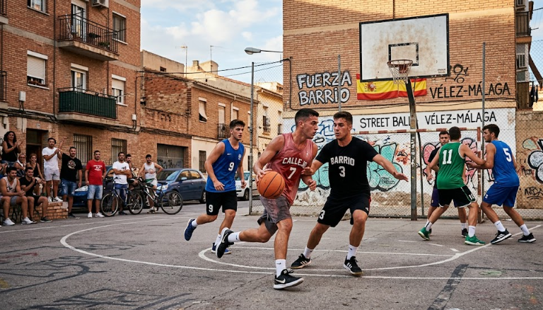

Con la finalización del calendario escolar a la vuelta de la esquina, vuelve el evento deportivo veraniego más esperado por los jóvenes baloncestistas y las familias de toda la comarca. El CB AxarBasket ha confirmado la apertura del plazo de inscripción para su ya emblemático Campus de Verano, que este año alcanza su undécima edición plenamente consolidado como la principal alternativa de ocio saludable y tecnificación deportiva en la zona durante el mes de julio. La actividad se desarrollará en las instalaciones cubiertas del Pabellón de la Axarquía para garantizar la máxima comodidad de los menores frente a las altas temperaturas veraniegas.
El programa metodológico, diseñado meticulosamente por entrenadores nacionales con titulación superior de la federación, estará dividido por grupos de edad y niveles competitivos, abarcando desde las nociones más básicas del minibasket de iniciación hasta sesiones específicas de tecnificación internacional para jugadores de categoría académica, enfocadas en la mecánica de tiro, el control de balón, el pase y la toma de decisiones en situaciones dinámicas de juego. Más allá del entrenamiento puramente físico, el campus complementará su oferta formativa con talleres educativos de nutrición para deportistas, charlas de psicología deportiva sobre los valores del esfuerzo en equipo y actividades de piscina. Además, como aliciente principal, los participantes contarán con la visita interactiva de los integrantes de la primera plantilla para firmar autógrafos y compartir entrenamientos. Las plazas son estrictamente limitadas para mantener los ratios de calidad en la enseñanza.
Hugo Ruiz - Periodista y analista experto, toda una eminencia - 10/05/2042